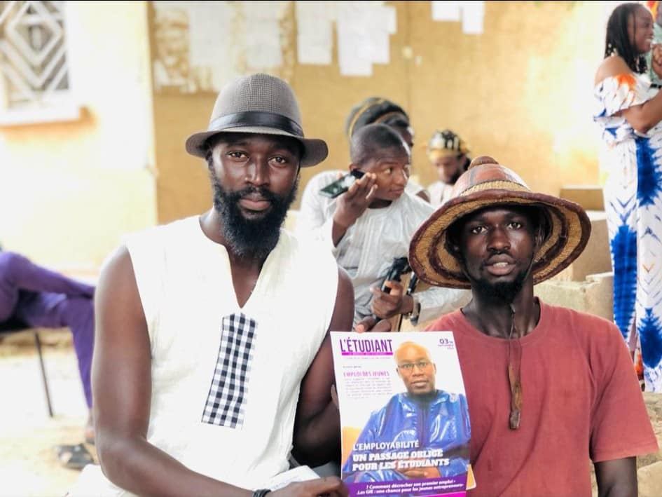
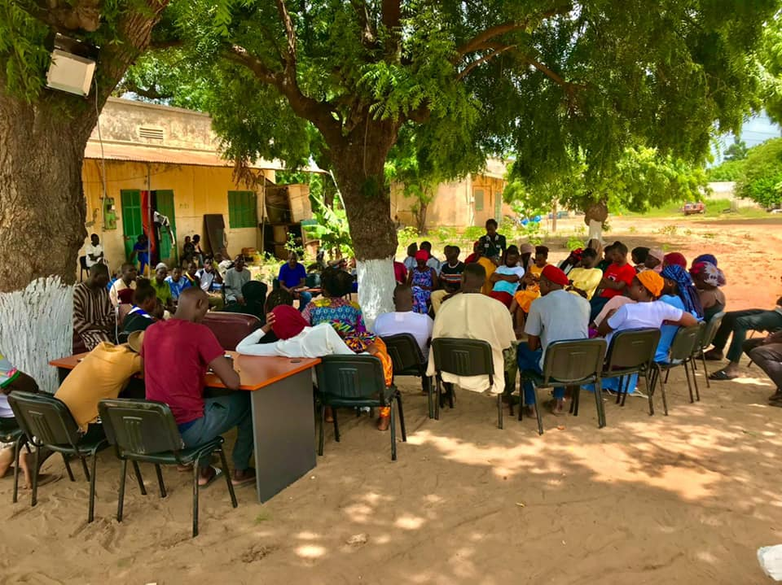
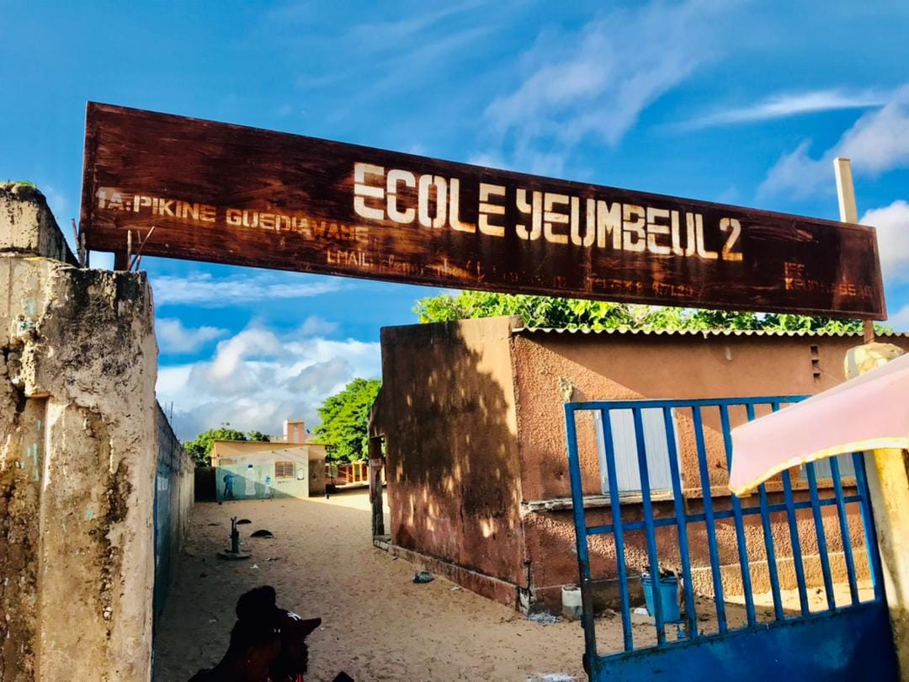
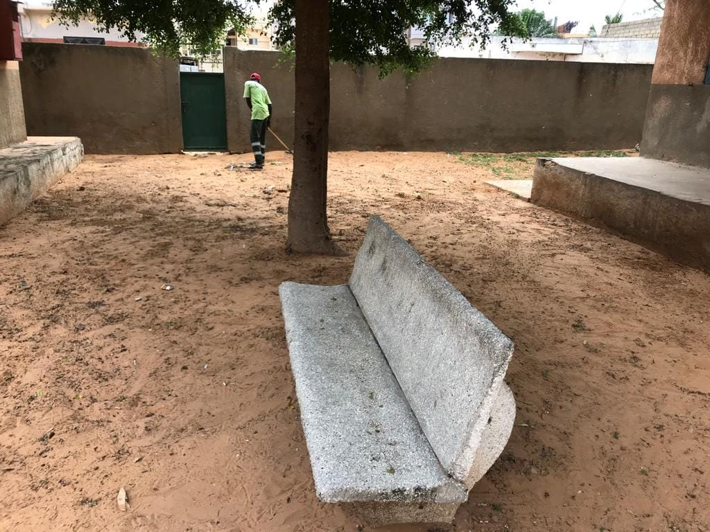
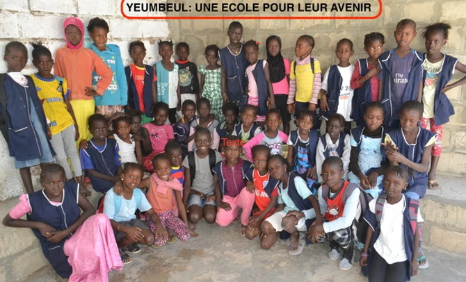

Rencontrer et échanger avec le maire Babacar Ndao premier magistrat de la commune de Yeumbeul Nord ne m'empêche pas aussi de dénoncer l'injustice et la mal gouvernance qui sévissent dans cette vielle commune qui depuis 1994 vive le calvaire de nombreuses problèmatiques.
DNous avons toujours répondu présent et nous continuons de le faire pour l'intérêt de Yeumbeul mais néanmoins si le maire et son équipe municipale n'arrive pas à respecter leurs accords comme l'état des lieux et l'Audit du foncier et de toutes les ressources de la commune, si le maire et son équipe municipale n'arrivent pas depuis 10 mois à résoudre les problématiques des Yeumbeulois
Une valeur de 14 millions pour des équipements médicaux distribués au 8 postes de santé de Yeumbeul Nord et Sud.
Nos félicitations à l'acteur de développement Idrissa Sarr et nous vous souhaitons une bonne continuation dans vos projets envers Yeumbeul et le département de Keur Massar. .
Remise De Financements À L'URMECS Au Niveau De La MEC Wollonté À Yeumbeul Nord.
Dans le cadre de la poursuite des objectifs d’inclusion financière du Sénégal fixé par son Excellence Monsieur le Président Macky Sall, Mme Zahra Iyane THIAM DIOP, Ministre de la Microfinance et de l'Economie sociale et solidaire, a présidé ce 12 mai 2022, la cérémonie de remise de financements à l'Union Rurale des Mutuelles l’épargne et de crédit du Sénégal( URMECS).



DECOUVERTE DES ACTIONS COMMUNAL

-Permettre aux enfants et aux enseignants-volontaires de mener leurs activités (enseignement/apprentissage) dans de meilleures conditions: réfection des toitures, enduits et peintures, assainissement de la cour de récréation.
.
-Améliorer fortement l’environnement scolaire: fabrication d'un nouveau mobilier , de tables et de tableaux par des artisans locaux.
Le projet consiste à l’élargissement et l’aménagement de la route des Niayes du rond-point Liberté VI à la station Shell de Keur Massar en 2—2 voies sur un linéaire de 23 km y compris la construction de 72 Km de voiries urbaines en pavés, la mise en place d’un système de Transport Rapide par Autobus sur un propre (TRA ou BRT),.
Les populations qui seront impactées par le projet d’extension de la Route des Niayes seront indemnisées par l’état à hauteur de 140 000 f le m2 . Inacceptable pour ces dernières qui en exigent 250 000. Elles ont d’ailleurs prévu de marcher le 4 octobre.
Elle est rattachée au Ministère de la Gouvernance Locale, du Développement et de l'Aménagement du Territoire et est chargée d'accompagner les collectivités locales dans la prise en charge de leurs compétences, en matière de gestion des déchets solides, à l'effet de pouvoir arriver à l'amélioration du cadre de vie.
C'est dans ce cadre qu'une nouvelle stratégie a été mise en place incluant dans sa phase initiale le lancement d'un plan d'urgence de relèvement du niveau

Les habitants de yeumbeul (banlieue de Dakar)ont créé une école communautaire afin de pouvoir scolariser les enfants de leur quartier qui n'avait pas de place dans la seule école primaire publique existante. Ils manquent de tout et beaucoup d'enfants n'ont pas les moyens de payer la moindre scolarité..
Notre Objectif:
-Assure la continuité des activités d'enseignement et d'apprentissage.
-Mettre en place un dispositif pour assurer l'entretien , la maintenance des installations en partenariat avec la collectivité locale.
-Relever la capacité d'accueil de l'école communautaire (actuellement 182 élèves)
MOT DU MAIRE
En vous y accueillant avec un grand plaisir, le Conseil municipal et moi-même avons le ferme espoir que le contact ainsi établi permettra, par des échanges réguliers et féconds, de faire de yeumbeul nord, un pôle de développement qui intègre toutes les dimensions de la vie urbaine.
La réalisation de cette grande ambition constitue un défi permanent, que nous comptons relever, avec toutes les Yeumbeuloies et tous les Dakarois, sur la base d’un contrat de vie urbaine partagée et concertée à l’écoute du citoyen et au service de la Ville.